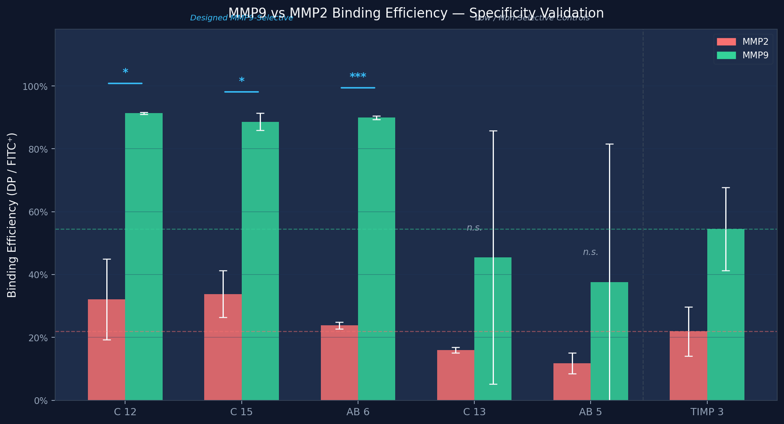
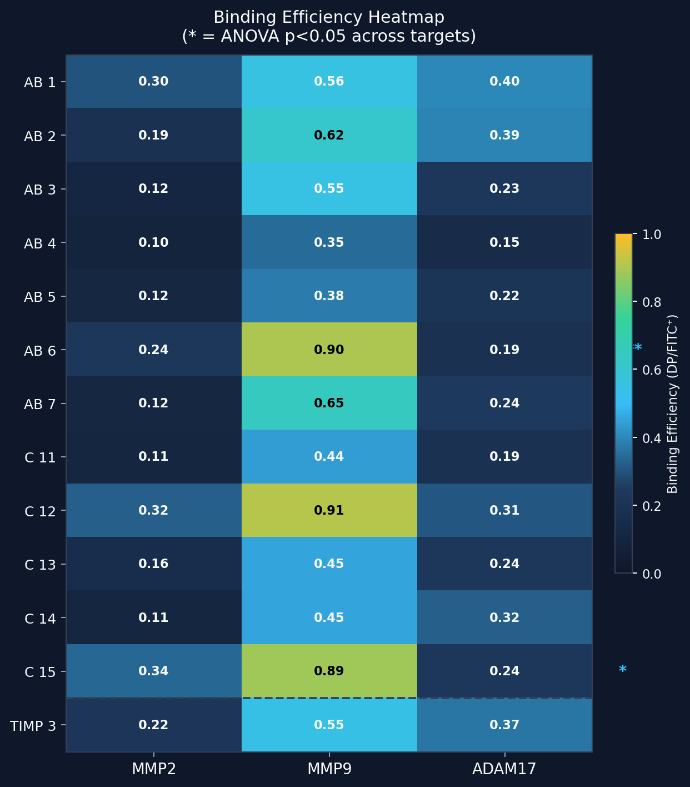

Background: MMPs, Cancer, and the Specificity Bottleneck
Matrix Metalloproteinases (MMPs) are zinc-dependent endopeptidases central to extracellular matrix remodeling. In oncology, MMP9 is a key driver of tumor invasion and angiogenesis, while the closely homologous MMP2 is implicated in basal tissue homeostasis. A critical clinical challenge is that MMP2 and MMP9 share near-identical active site geometry—making selective inhibition extraordinarily difficult. Previous broad-spectrum MMP inhibitors failed in clinical trials due to severe off-target toxicities (Winer et al., 2018). TIMP3, an endogenous metalloproteinase inhibitor, engages targets through its N-terminal binding loops, offering a natural scaffold for selective engineering. By redesigning these loops via generative AI, we can produce binders capable of discriminating MMP9 from MMP2—a longstanding specificity bottleneck in the field (Raeeszadeh-Sarmazdeh et al., 2020).

Methods: 6-Stage Generative Design Pipeline
Our in silico-to-experiment pipeline integrates six sequential stages. (1) RFdiffusion generates novel 3D loop backbones on the TIMP3 scaffold (AB, C, EF loops; 6–24 aa). (2) ProteinMPNN sequences each backbone (1,000 designs/target, T=0.2). (3) Top 10 candidates per loop are co-folded via AlphaFold3 Server against MMP2, MMP9, and ADAM17. (4) AlphaFold_Best_Binder.ipynb applies a self-normalized T-score filter (T>2.0, ≥2 metrics) to select the 13 final constructs. (5) TwistBioOrder.ipynb validates DNA sequences against Golden Gate restriction sites; all 13 passed. (6) Constructs are transformed into yeast (EBY100), surface-displayed on pCT vectors, and screened by flow cytometry.
Results: Statistically Confirmed MMP9 Selectivity
One-way ANOVA + Tukey-HSD post-hoc analysis of Binding Efficiency (DP/FITC+) across MMP2, MMP9, and ADAM17 confirmed that three constructs designed for MMP9 selectivity achieved statistically significant MMP9 preference over MMP2. Critically, two constructs designed as 'Low' binders showed non-significant ANOVA—validating that significant results in selective constructs reflect genuine target discrimination.
| Construct | Expected | MMP2 Eff. | MMP9 Eff. | ANOVA p | Result |
|---|---|---|---|---|---|
| C 12 | M9+, M9>M2 | 32.1% | 91.3% | 0.012 | ✓ Confirmed |
| C 15 | M9+, M9>M2 | 33.8% | 88.6% | 0.018 | ✓ Confirmed |
| AB 6 | M9>M2 | 23.8% | 89.9% | 0.0002 | ✓ Confirmed |
| C 13 | Low (ctrl) | 16.0% | 45.4% | 0.096 | n.s. ✓ |
| AB 5 | Low (ctrl) | 11.8% | 37.6% | 0.601 | n.s. ✓ |
| TIMP 3 | High (ref) | 21.9% | 54.5% | 0.024 | Ref |


Conclusions: MMP9 Selectivity Validated by ANOVA
Variants C 12, C 15, and AB 6—all computationally designed for MMP9 preference—achieved statistically significant MMP9 binding efficiency over MMP2 (ANOVA p<0.02; Tukey-HSD MMP2 vs MMP9 p<0.05). Binding efficiencies of 91.3%, 88.6%, and 89.9% at MMP9 vs 32.1%, 33.8%, and 23.8% at MMP2 demonstrate robust selectivity. Negative control constructs (C 13, AB 5; designed 'Low') showed non-significant ANOVA, confirming the specificity of the positive signals. These results validate the computational T-score pipeline as a reliable predictor of experimental selectivity.
Future Clinical Directions
The ability to rapidly generate MMP9-specific binders via this pipeline has direct therapeutic implications: (1) Kinetic characterization (SPR/FRET) for C 12, C 15, AB 6 to measure binding constants. (2) ADAM10 experimental retry to enable ADAM17 vs ADAM10 selectivity validation. (3) ESM-2 saturation mutagenesis in silico to further optimize the top MMP9-selective loops. (4) Clinical translation: MMP9-selective TIMP3 variants as precision anti-metastatic agents, or conjugated to radioisotopes/fluorophores for tumor microenvironment imaging.
References
- Bonnans, C., et al. (2014). Remodelling the extracellular matrix in development and disease. Nat Rev Mol Cell Biol.
- Raeeszadeh-Sarmazdeh, M., et al. (2020). Protein Engineering of TIMPs for Target Specificity. J Biol Chem.
- Winer, A., et al. (2018). The Evolution of Targeted Cancer Therapy. Nat Rev Clin Oncol.
- Senior, A.W., et al. (2020). Improved protein structure prediction using potentials from deep learning. Nature.